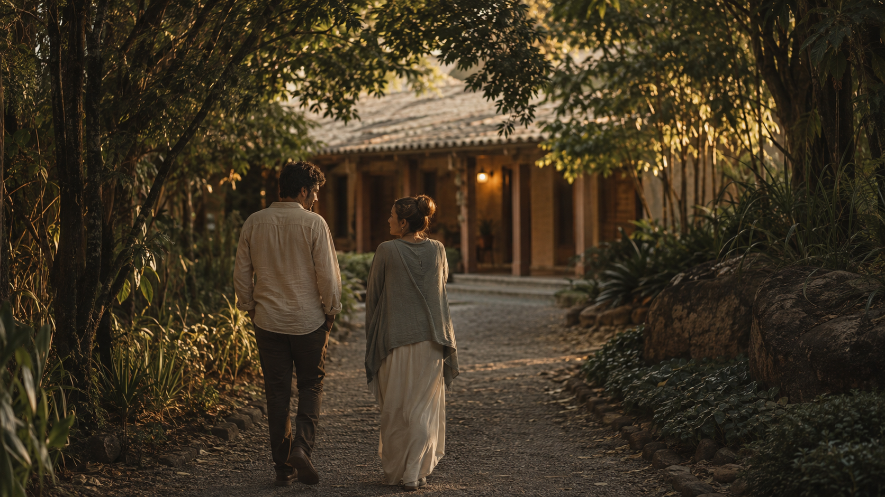

Atendimentos e práticas que acolhem o momento presente.
Quem somos
Um lugar onde muitos caminhos se encontram.
O Potala reúne cuidado, conhecimento, cultura e convivência para que cada pessoa possa descobrir, em seu próprio tempo, aquilo que faz sentido para sua jornada.
Conhecer nossa históriaDesde 2012Indaiatuba · SP

01
Uma visão de cuidado
Somos todos um único instituto.
O Potala nasceu da convicção de que o desenvolvimento humano acontece quando diferentes saberes podem dialogar. Cada pessoa chega com uma história, necessidades e possibilidades próprias.
Por isso, não oferecemos uma única resposta. Criamos um ambiente onde ciência, tradições de cuidado, educação, arte, cultura e espiritualidade possam se encontrar com respeito e consciência.
Origem e propósito
Estender as mãos para que novos caminhos possam surgir.
O Instituto Cultural Potala foi inaugurado em 26 de maio de 2012, em Indaiatuba. Seu nome remete ao Monte Potala, no Tibete, associado à morada de Avalokiteshvara — figura que simboliza a compaixão e a escuta dos clamores do mundo.
Essa imagem inspira uma missão simples e profunda: acolher pessoas e promover saúde física, mental e emocional por meio de experiências que respeitem a individualidade de cada ser humano.
Ecossistema Potala
Cuidar também é aprender, conviver, criar e transformar.
Cursos e conteúdos que ampliam a compreensão e a autonomia.
Corpo, arte e experiências que transformam conhecimento em vida.
Pessoas e iniciativas reunidas por um propósito comum.
Conhecer um lugar é importante. Mas conhecer as pessoas, as ideias e os propósitos que o sustentam tornam qualquer encontro muito mais verdadeiro. Agora que você já conhece um pouco da nossa história, gostaríamos de apresentar aquilo que fazemos todos os dias: cuidar de pessoas.
